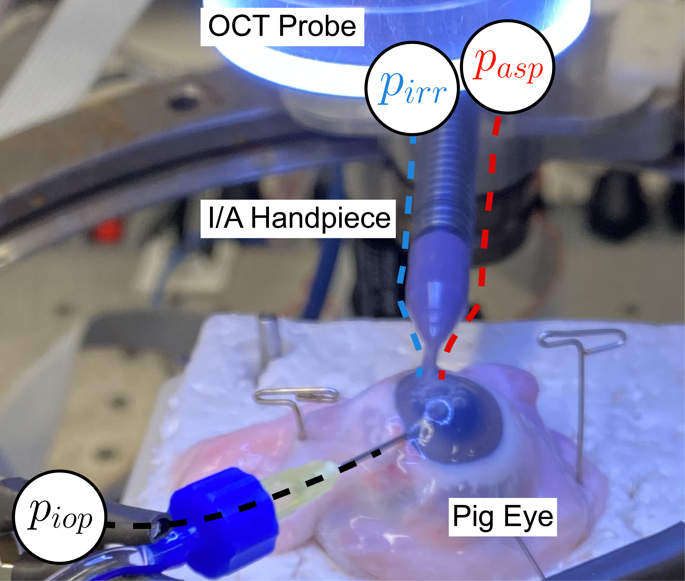
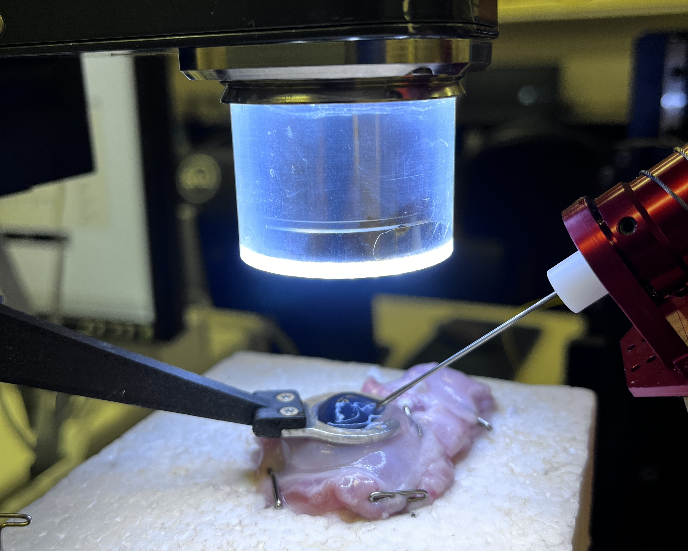
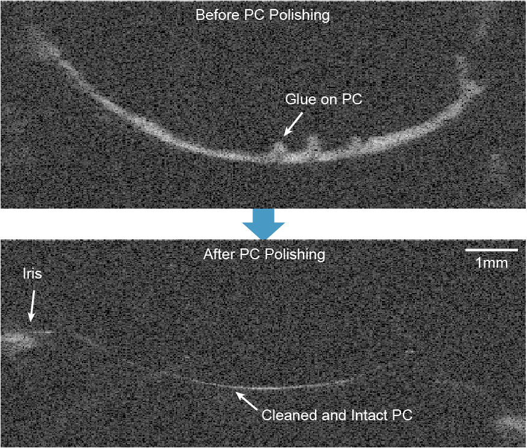

My research interest include the design and control of robotic systems, sensor fusion, and image-guided robot navigation.
Current Projects

Intraocular Pressure Control
08/2022 – Present
Intraocular pressure control on the anterior chamber of the pig eye.
Pressure Control / OCT Sensing / Surgical Automation

Complete Capsule Mapping
02/2023 – Present
Visualize the lens equatorial region through enhance OCT sensing.
Image Processing / OCT Sensing / Surgical Automation
Selected Past Projects

Posterior Capsule (PC) Polishing
12/2021
Automated OCT-guided robotic PC polishing on ex-vivo pig eyes.
Autonomous Guidance / OCT Guidance / Surgical Robotics

Traffic Light Detection
01/2019
Vision-guided traffic light detection and recognition on a vehicle.
Autonomous Vehicle / Sensor Fusion / Image Processing